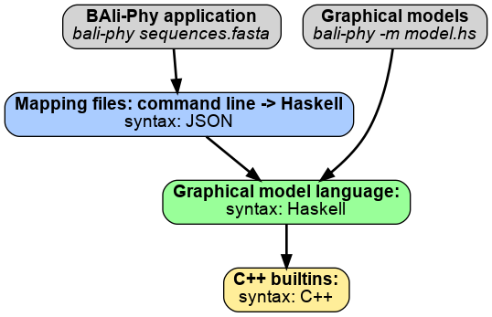

BAli-Phy has an architecture that is divided into several levels. Adding new functions, models, or distributions primarily involves add new functions to the model language using Haskell syntax (green). Sometimes these functions are implemented in C++ and then made visible to the Haskell language (yellow). In order to make these functions available in command-line model definitions for the BAli-Phy application, you must additionally write a JSON file that specifies which Haskell function the feature corresponds to. However, if you wish to use the graphical model framework directly, then you do not need to write a JSON file.

Haskell functions are defined in the Haskell modules under modules/. For example, the function min is defined in Prelude.hs as follows:
To add a Haskell function, you simply need to define a function in one of these modules.
To add a “builtin” C++ operation to bali-phy’s Haskell code, you must add the C++ code for the operation to one of the C++ files in the src/builtins/ directory. You must then declare the builtin in one of the Haskell files in the modules/ directory.
A builtin is declared via the following syntax:
For example, the Haskell function poisson_density is declared with the following line from modules/Distributions.hs:
The first two arguments specify the Haskell name (poisson_density) and the number of arguments in Haskell (2). The C++ function name is derived from the third argument (poisson_density) by adding builtin_function_ in front. So the C++ function will be called builtin_function_poisson_density. The last argument specifies which loadable module contains the C++ function. Since this function is in the module “Distribution”, its source code goes in src/builtins/Distribution.cc.
The C++ function for a builtin must be defined in one of the C++ files in the src/builtins directory, and the function name must begin with builtin_function_. The function must also be declared extern "C" (to avoid name mangling).
For example, the poisson density function is written in src/builtins/Distribution.cc as follows:
extern "C" closure builtin_function_poisson_density(OperationArgs& Args)
{
double mu = Args.evaluate(0).as_double();
int n = Args.evaluate(1).as_int();
return { poisson_pdf(mu,n) };
}Input:
OperationArgs& Args argument.nth argument is fetched by calling Args.evaluate(n), and is of type expression_ref (src/computation/expression/expression_ref.H)expression_ref can be converted to int, double, or log_double_t using the methods .as_int(), .as_double() and .as_log_double().Output:
closure object (src/computation/closure.H)double or int. Here an explicit conversion is invoked by surrouding a log_double_t with curly braces.Distributions are defined in modules/Distributions.hs.
For a distribution, you need to add a function that constructs a ProbDensity object.
For example, the Normal distribution is defined as:
builtin normal_density 3 "normal_density" "Distribution"
builtin normal_quantile 3 "normal_quantile" "Distribution"
builtin builtin_sample_normal 2 "sample_normal" "Distribution"
sample_normal m s = Random (IOAction2 builtin_sample_normal m s)
normal m s = ProbDensity (normal_density m s) (normal_quantile m s) (sample_normal m s) realLineA density function takes an extra argument after the distribution parameters. For example, the normal density takes 3 arguments, so that (normal_density m s) is a function of the third argument.
A density function should return type log_double_t.
A quantile function takes an extra argument after the distribution parameters. For example, the normal quantile takes 3 arguments, so that (normal_quantile m s) is a function of the third argument. The extra argument should have type double, and ranges from 0 to 1.
If the function is not univariate, or does not have a quantile functon, set the quantile function to (no_quantile "distribution name"). This will later change to use polymorphism, where only 1-dimensional functions will have a quantile attribute.
To construct a random sample from a C++ procedure, access the nth parameter via Args.evaluate_(n) (with an underscore) instead of Args.evaluate(n). For example:
extern "C" closure builtin_function_sample_normal(OperationArgs& Args)
{
double a1 = Args.evaluate_(0).as_double();
double a2 = Args.evaluate_(1).as_double();
return { gaussian(a1, a2) };
}Then use one of the following patterns, depending on how many arguments your sampling routine takes:
sample_dist arg1 = Random (IOAction1 builtin_sample_dist arg1)
sample_dist arg1 arg2 = Random (IOAction2 builtin_sample_dist arg1 arg2)
sample_dist arg1 arg2 arg3 = Random (IOAction3 builtin_sample_dist arg1 arg2 arg3)For example:
builtin builtin_sample_normal 2 "sample_normal" "Distribution"
sample_normal m s = Random (IOAction2 builtin_sample_normal m s)The (dist_sample parameters) function returns an object in the Random monad, where executing a distribution has the semantics of sampling from the distribution. The sampling procedure can also call other actions in the Random monad. For example, here we sample from the distribution (dist2 args) and transform the result.
Ranges for real numbers are:
Ranges for Integers are:
In each case, the range includes the bounds. For example, (integer_above 0) includes 0, and (integer_between 0 1) includes 0 and 1.
Ranges for Booleans are:
Ranges for simplices are
where n is the number of dimensions, and sum is the sum of the values (usually 1.0).
To make a Haskell function accessible from the command line, you must add a JSON file to the directory functions/ that registers the Haskell function. For example, the file functions/hky85.json allows the user to specify (for example) -S hky85[kappa=2] as a substitution model. The JSON looks like this:
{
"name": "hky85",
"title": "The Hasegawa-Kishino-Yano (1985) nucleotide rate matrix",
"result_type": "ExchangeModel[a]",
"constraints": ["Nucleotides[a]"],
"citation":{"type": "article",
"title": "Dating of the human-ape splitting by a molecular clock of mitochondrial DNA",
"year": "1985",
"author": [{"name": "Hasegawa, Masami"}, {"name": "Kishino, Hirohisa"}, {"name": "Yano, Taka-aki"}],
"journal": {"name": "Journal of molecular evolution", "volume": "22",
"identifier": [{"type":"doi","id":"10.1007/BF02101694"}]
},
"call": "SModel.Nucleotides.hky85[kappa,SModel.Frequency.frequencies_from_dict[a,pi],a]",
"args": [
{
"arg_name": "kappa",
"arg_type": "Double",
"default_value": "~log_normal[log[2],0.25]",
"description": "Transition\/transversion ratio"
},
{
"arg_name": "pi",
"arg_type": "List[Pair[String,Double]]",
"default_value": "~dirichlet_on[letters[@a],1]",
"description": "Letter frequencies"
},
{
"arg_name": "a",
"arg_type": "a",
"default_value": "getAlphabet",
"description": "The alphabet"
}
],
"description":"The HKY85 model",
"extract": "all"
}The fields are defined as follows:
namecallresult_typeargsargs.arg_nameargs.arg_typeargs.default_valueargs.descriptiontitledescriptionMost moves are currently defined in C++. Moves are actually added to the sampler in src/mcmc/setup.cc.
MCMC::MoveAllYou can add other moves as sub-moves to an MCMC::MoveAll:
The weight determines how many times the sub-move is run each iteration.
MCMC::SingleMoveTo add a generic MCMC move, create an MCMC::SingleMove with one of the following constructors:
SingleMove(void (*move)(owned_ptr<Model>&,MoveStats&), const std::string& name);
SingleMove(void (*move)(owned_ptr<Model>&,MoveStats&), const std::string& name, const std::string& attributes);You can pass in a function with signature void(owned_ptr<Model>&,MoveStats&) that performs the move. This is how moves that alter alignments are defined.
We use an owned_ptr<> so that we can treat Model& polymorphically.
MCMC::MH_MoveThe MCMC::MH_Move has the following constructors:
MH_Move(const Proposal& P, const std::string& name);
MH_Move(const Proposal& P, const std::string& name, const std::string& attributes);Proposals are defined in src/mcmc/proposals.H.
Proposals are generally defined as functions that alter the MCMC state and then return a proposal ratio:
class Proposal: public Object {
public:
Proposal* clone() const =0;
virtual log_double_t operator()(Model& P) const=0;
};Here Model& is the current state of the MCMC object. The type log_double_t is a probability (or probability_density) represented on the log scale.
The Proposal2 class has constructor:
The names in s are names of variables to modify, and the names in v are names of keys to look up to find tunable parameters such as jump sizes.
The Proposal_Fn class represents an MCMC move that affects some number of variables x, with some number of tunable parameters p.
class Proposal_Fn
{
public:
virtual log_double_t operator()(std::vector< expression_ref >& x,const std::vector<double>& p) const;
};It is possible to compose Proposal_Fns to create complex proposals, such as:
Reflect(bounds, shift_cauchy)log_scaled(between(-20, 20, shift_cauchy))log_scaled(between(-20, 20, shift_gaussian))log_double_tThis is a positive real number represented in terms of its logarithm. Operators have been defined so that you can multiply, add, subtract, and divide this type.
ObjectAll C++ objects are accessed from Haskell inherit from this type.
expression_refAn expression ref is basically either an atomic value or an Object followed by a list of expression_refs
See src/computation/expression/expression_ref.H
closureA closure is an expression_ref with an environment.
BAli-Phy currently has two test suites.
tests/ directory